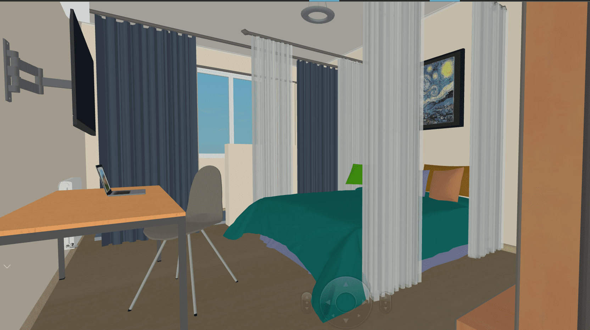

2017年高考之后，李牧第一次住民宿，
“很陌生也很新奇”。
一年过去了，李牧走过了不少城市。
“住了恐怕有十几所民宿”的她，
已经完全熟悉了民宿的入住流程和优缺利弊。
然而，自认为十分了解民宿的李牧，
在最近一次入住中遭遇了“滑铁卢”。
一次不大不小的“事故”，把民宿的安全问题推到了她——以及我们所有人——的面前：
时下遍地开花的民宿，真的安全吗？
民宿的突然蹿红，更大程度上应被概括为“短租业异军突起”。
“民宿”是指“利用当地闲置资源，民宿主人参与接待，为游客提供体验当地自然、文化与生产生活方式的小型住宿设施。”
民宿这个的概念源自于日本，经台湾传入大陆。2012年，传统酒店业进入相对平缓的发展期，和此形成鲜明对比的是，非标准化的民宿行业在Airbnb的影响下，开始发展。大众出行主体由商务出行转向个人旅游，跟团游转向自由行，用户对于客栈民宿等个体化主题住宿需求增加，同时加上“互联网+”的发展背景，在线民宿开始崛起，创业者蜂拥而至。
近几年，共享经济高速发展，民宿作为共享空间的代表产物之一，正逐渐走入人们的视野。越来越多的人开始将民宿作为外出旅行住宿时的一个备选项。
但就国内而言，真正有特色、有自然或人文资源做支撑的特色民宿寥寥无几。市场上几大平台所推出的民宿房源，更多只是打着民宿的旗号；其本质更贴近于另一个概念：“短租房”。
“短租”是指“伴随协同消费模式的兴起而出现的一种新兴的房屋租赁形式。”主要房源集中在旅游热点地区，无法找到长期固定的租客，短期租客需求旺盛的情况下发展起来的新兴业务。
相比入行门槛高、前期投入成本大的民宿行业，短租以投入少、回报快的优势吸引了更多的房源，迅速崛起。但因为国内尚未出台明确区分两者的相关规定，时至今日，无论是消费者还是商家都仍将民宿和短租当做一个概念来讨论。
从2012年开始，中国在线短租行业开始萌芽，市场交易额约在5.5亿元左右。2015年是在线短租市场的爆发期，市场交易规模环比增长达到121.9%。到了2017年，中国在线短租行业市场交易额约为145亿元，是五年前的26.4倍。虽然自2016年后，市场交易额增长率较往年有所下降，但仍维持在较高态势。预计2020年市场规模有望突破500亿元。
据国家信息中心分享经济研究中心发布的《中国共享住宿发展报告2018》，2017年，我国共享住宿市场交易参与人数达到7800万人，房客约7600万人；到2020年，我国共享住宿房源将超过600万套，房客数将超过1亿人。
尽管短租行业发展迅猛，势头惊人。许多行业弊病也慢慢显露出来。其中最为突出的就是短租房的安全问题。
卫生不合格是首大安全问题。为调查民宿卫生情况，江苏省消协于今年4月委托第三方机构从消费过程中的安全度、诚信度、便利度和维权度等维度出发，开展对江苏民宿的消费状况调查。调查结果如下：
-
5.3 经营场地应征得当地政府及相关部门的同意。
5.4 经营应依法取得当地政府要求的相关证照，满足公安机关治安消防相关要求。
15.19%的消费者反映住过的民宿营业执照没有上墙公示，实际暗访体验中有55%的民宿营业执照没有上墙公布
-
5.11 服务项目应通过适当方式以文字、图形方式公示，并标明营业时间。收费项目应明码标价，诚信经营。
38%的民宿没有明码标价的收费标准、住客须知，43%没有公布投诉电话和负责人电话。
-
6.2 易发生危险的区域和设施应设置安全警示标志，安全标志应符合 GB 2894 要求；易燃、易爆物品的储存和管理应采取必要的防护措施，符合相关法规。
60家被调查的民宿中，95%没有消防应急包，87%没有逃生通道图，33%的民宿公共区域每个楼层明显位置没有配置灭火器。
-
从业人员应经过卫生培训和健康检查，持证上岗。
78%的民宿从业人员有效健康证明没有上墙公布
-
7.10 应有适应所在地区气候的采暖、制冷设备，各区域通风良好。
8.1 旅游民宿应整洁卫生，空气清新，无潮霉、无异味。
8.2 客房床单、被套、枕套、毛巾等应做到每客必换，并能应宾客要求提供相应服务。公用物品应一客一消毒。
8.3 客房卫生间应有防潮通风措施，每天全面清理一次，无异味、无积水、无污渍，公用物品应一客一消毒。
95%的民宿用品没有消毒或清洁标识，19%的民宿床品洁净度在3分以下(总分5分)，只做到了基本洁净，其中3%的民宿床品不干净或非常不干净;18%的民宿毛巾洁净度在3分以下(总分5分)，基本清洁，6%的毛巾不干净或非常不干净，存在毛发、污渍等问题。此外，14%的体验员表示入住的房间有异味。
-
10.2.2.7 宜提供早餐和特色餐饮服务，或附近有餐饮点
43%的民宿不提供餐饮服务，且19%的民宿附近就餐的便利性在3分以下
-
10.1.2.4 客房卫生间宜装修高档，干湿分离，有防滑防溅措施，24h 供应冷热水。
10.1.1.3 宜在附近设置交通工具停放场地，方便抵达。不影响周边居民生活。
33%不提供停车位、32%的民宿不提供旅游指南、18%不提供雨具电吹风出借等服务、5%的民宿没有提供24小时冷热水服务，3%的民宿房间照明设备有损坏。
从上表可以明显看到，很多民宿都存在卫生问题。
短租房的住户流动性非常强。对于房东和住户自己来说，都带来了较大的安全隐患。
去年十二月的时候，王媛媛和自己的男朋友以及两个同学一起外出跨年。他们在爱彼迎平台上选择了昌平的一家民宿。
王媛媛一行原本的计划是先将行李等物品放在民宿内，然后外出游玩。下午四点左右，到达民宿的四人准备联系房东，问密码锁的开门密码。但就在这时他们发现，民宿的门是虚掩着的，并没有锁上。推门进入后，里面有一位四十岁左右的中年妇女正在清扫房间，身边放着一个非常大的垃圾袋。
看到进入的四人，打扫清洁的妇女自称自己是负责“这一片民宿”的保洁员，然后继续打扫清洁。四人则直接进入房间并锁上了房门。再出门的时候，保洁员已经离开。
“这种安全隐患是相对的。”王媛媛说。这名保洁员并没有穿制服，也没有佩戴能证明自己身份的胸牌。“我怎么知道她是不是保洁员，又是怎么打开密码锁进入房间的？”
另外，据王媛媛描述，自己并没有表示过自己是来住民宿的，但该妇女也并没有询问同行四人的身份，就让他们直接进去了。“我就觉得她也没问我们是不是住在这里的，要是我们是小偷呢，这不就造成安全问题了么。”王媛媛说道。
另外，李晶雨也遇到过类似的“身份不明”的状况，尽管这次她是受益者。
李晶雨暑假和男友一起外出游玩时，在平台上预定了一家民宿。因为李晶雨不想让父亲知道自己外出游玩的事情，就勾选了“一人居住”的选项，只让男友填写了个人信息并缴纳押金。
“等到晚上住房间的时候，房东不会再来的。我就直接住进去就可以了。”李晶雨说。但她同时也质疑这种制度的安全性——和宾馆前台的“来访者登记制度”不同，民宿可以接纳入住者带来的任何人。“虽然这样是很方便，但是我也觉得很不安全。”
提起半年前住民宿时的遭遇，李牧至今仍愤愤不平。
李牧就读于中国传媒大学，其男友长期在外地读书，偶尔回北京与李牧见面。上一次男友回北京时，李牧在民宿平台小猪上预定了一套位于定福庄西里的民宿，并于四月六日入住。
四月八日，李牧正在上课，突然收到了男友的微信。男友在微信中表示两人所居住的民宿出了一点事情，但是已经处理好了，还叫李牧不必担心。
等李牧下课后匆匆回到民宿，才得知几小时前警察来民宿查访。据男友说，警察刚开始敲门时自己正在睡觉，并没有听见。等他醒来并打开房门时，两名警察正在客厅安抚一名哭泣的女孩。据他描述，两名警察一男一女，均在三十岁左右。因为接到楼下住户投诉噪音的电话而来。正在哭泣的女孩住在这套民宿的另一个房间，因为没有见过警察查访而被吓哭了。
警察称，李牧二人住的这套民宿不是平台上显示的房主自己的房子，而属于一家短租公司。这家短租公司之前并不知道这套空置的房源被改装成民宿了，目前正在调查当中。李牧男友说自己事先并不清楚这套房子的归属情况。
警察还表示，这套房子有较多安全隐患。天然气管道老化，有泄漏危险；门锁的密码也很久没换，以前的房客可以直接进入民宿。
怀着息事宁人的想法，李牧二人并未就警察来访此事向房东进行询问。但直到四月十四日退房时，房东也并未主动向二人解释此事或者给予二人精神补偿。
据记者调查，李牧所描述的房源现在已经在小猪平台上被删除。房源地点及房间照片等信息被清理一空。
记者尝试在小猪平台上联系被删除房源的房主，询问民宿房所属权以及房源被删除的原因。房主表示房子所有权属于自己，房源被删是因为想要收回房子，“自己住”。
面对“天然气管道是否老化不符合安全规定”的询问，房主说自己“前几天打电话让工作人员刚检查过，没说不符合安全规定。”但当记者提出想要看看相关检查报告时，房主并未再次给予回复。

李牧在采访中表示，中传周边的民宿外部环境堪忧，尤其是和中蓝公寓比邻的定福庄西街小区。“那里面很多类似于棚户区的平房，路很窄。晚上基本没有路灯，非常黑，我一般会让男朋友下来接我，绝对不敢一个人走。”
据记者九月二十六日晚实地调查，南北向贯穿定福庄西街小区东区的街道长约270米，有五个路灯。在路灯下能见度较高，但因路灯分布过于稀疏，道路两侧部分角落依然显得比较黑暗。东西向的街道有多条，平均距离为140米，都没有路灯。路边的平房内隐隐透出的白炽灯光可以勉强照亮附近两米左右的空间，大部分时候记者只能打开手电筒以照亮路面。
她还表示，尽管许多民宿内的装潢很温馨，也打扫的很干净。但有的民宿所在的单元楼年久失修，有很严重的安全隐患。单元楼一楼的防盗门是坏的，可以随意打开；楼道狭窄而且灯光昏暗，到了晚上很难看清脚下的阶梯。民宿所属小区并未设立围墙、门禁或者安保设施。
“民宿网站上的照片大多是房间内的照片。民宿所在单元楼和小区设施如何往往看不见。”李牧说道。
在民宿平台爱彼迎上，记者试图跟房东沟通，表示希望能提前看房以后再预定，房东则都表示“平台有规定，没有预订的话没办法实地看房”；“照片都是实际拍摄的，实地看和看照片也不会有什么区别”，在民宿平台途家上与房东沟通时，记者也得到了同样的回复。当记者表示照片上无法反映民宿卫生条件、隔音条件、房源所在社区的设施情况时，一名在多个平台都有上线房源的房东表示，“只能说在实地看房的问题上，所有民宿平台规则都一样”。
记者在珠江绿洲小区的物业管理处和定福庄西里小区的社区了解到，作为传媒大学周边的社区，短租房的情况都普遍存在，两边管理中心人员都表示接到过社区居民对于短租房租客或房东的投诉，理由包括担心外来流动人口带来的安全隐患、租客吵闹打扰到居民休息等。但总体情况尚处于可控范围内。
珠江绿洲的工作人员表示，接到过的投诉数量不多，并且辖区派出所对短租房查处的力度很大，小区内的隔断房已被基本清除清除；定福庄西里的工作人员同样表示，接到投诉的次数屈指可数，绝大部分居民的作息生活可以得到保障。
“在线短租”民宿作为一种新型经济模式，具有独特的法律结构关系和运行机制，不能完全适用于或被现有的法律制度所涵盖。目前，“在线短租”民宿面临的最大法律困境就是对其合法性的质疑及与之配套的法律法规的缺失，使大部分“在线短租”民宿处于“无法可依”的灰色地带。
记者在三间房派出所了解到，在辖区范围内，短租房的存在是不合规定的，一经查实，会给予房主停止经营的警告，并对其进行批评教育。
派出所杨警官表示，由于制度的不成熟，短租房市场并不规范，商家和产品都是良莠不齐，消费者权益在消防、卫生安全方面都没法得到保障，但是就传媒大学周边而言，由于高校自身的特殊性，民宿应运而生的情况也是很难避免的。由于带有禁令性质的相关法律法规尚未出台，派出目前所能做的，也只有对违规隔断房的查处、对查实短租房主的警告批评和对辖区居民安全教育。
记者随机采访了珠江绿洲小区的居民，发现警察查处违规隔断房的情况很常见。居民陈先生告诉记者，“有一次我出门了以后又折回去拿银行卡，警察就跟着我进（单元门）了，还问我是不是住在这里的。”在陈先生表示肯定后，警察们直接一楼的短租房，警告房东把隔断拆掉。“一个一百平的房子隔成了5间，算上公共空间，还是比较拥挤的。”
陈先生在这个小区住了3年，遇到过两次警察查违规隔断房的情况，“要是被人举报然后警察来查的话，第一次警告，第二次就强拆——隔断是肯定不允许存在的。”
记者随后在爱彼迎、自如、小猪、途家这四个提供短租房服务的平台上联系客服，试图询问平台对于辖区派出所对短租房的相关管理条令是否知晓、是否做出过调整。爱彼迎平台的消息提示稍后会联系记者，但是截至发稿时，记者尚未得到回应。
自如客服回应：“目前的民宿房源都由房东直营，因为各个地区对房源的管制不同，且管理办法都在试修订，自如民宿平台在核实最新情况以后，会进行相应调整，如果房东的房源确实不能经营了，会将房东的房源下架。”
小猪客服回应：“针对小猪的上线的房源，都会要求房东按照当地政府的规定出租，如果政府有规定不能短租，房东需要按照政府的规定下线房源。”
途家客服表示暂时不会对本地区房源做出调整，也不会主动与相关部门落实相关治安管理条令，会以当地政府文件为准。
总的来说，短租房的合法性还有待商榷，需要各地出台先关法规加以界定和规范。
近年来，国家大力鼓励发展旅游产业，丰富国民休闲消费项目，如乡村旅游、个性化自由行等，促进旅游产业的多元化发展。
在2015年11月，首次将共享经济概念写入党的全会决议中，说明当下国家重视新型经济模式能给发展注入新的力量，社会资源的有效再配置，能优化部分市场弊端。
自2015年，政府持续出台先关政策，一步步鼓励民宿以及短租行业的更好更快发展，通过政策福利的推行，彻底释放行业潜力。
去年八月份，国家旅游局发布《旅游民宿基本要求与评价》，第一次从法规层面对民宿的经营执照，经营条件、硬件设施以及卫生水平等方面做出了明确规定。
在市场准入方面，强调民宿经营者必须依法取得当地所要求的相关证照，并满足公安机关消防相关要求，民宿单幢建筑客房数量应不超过4间。
但时至今日，国家尚未对短租行业出台任何法规。比起大型的、成体系的民宿区，《旅游民宿基本要求与评价》在大部分零散的短租房中的落地也很难在短期内实现。短租房的市场准入、安全检验等工作暂时停留在各平台的“自律”层面。短租房相关的安全隐患还将存在很长一段时间。
据《2017年中国在线短租行业研究报告》，2016年中国短租平台用户对人身安全的关注率约为94.6%，对房间卫生的关注率约为92.5%。在采访中，绝大部分受访者都表示自己在挑选短租房时会把安全因素放在第一位；如果安全问题得不到保证，自己将选择更加昂贵但也更安全的宾馆、酒店等。
但同时李牧也表示，自己下次仍会租住短租房。“因为价格实在是便宜太多了，要省钱就没有办法考虑那么多。”
在艾瑞咨询最近的一次针对在线短租用户的随机调研中，26-35岁的用户占比超过60%，可以看出中青年仍然是在线短租的主流消费群体。在之前的采访中，住户陈先生也表示短租房的住户中年轻人比较多。“年轻人嘛，旅游的话可能经费也不是很充足，如果不是主卧的话，大概一晚上一百块钱不到这个样子。”
“安全”不应是“廉价”的对立面。尽管民宿以及短租房的确为许多预算紧张的出行者提供了更加省钱的选择，但如果这种高性价比是以安全隐患为代价，未必划算。
在政策层面上，政府应在鼓励短租房行业发展的同时，加快配套法律法规的制定和出台，通过界定清楚“在线短租”民宿参与主体的法律地位、针对不同类型的“在线短租”民宿建立与之相应的市场准入制度、对不合规短租房进行惩处等措施，提升行业的规范程度。
在社会层面上，各短租平台以及民宿平台也应该加强自检，对于不符合安全规定的房源一律下线。短租房的用户也应提高警惕，在外出居住中多加留意身边，拒绝入住有安全隐患的短租房。